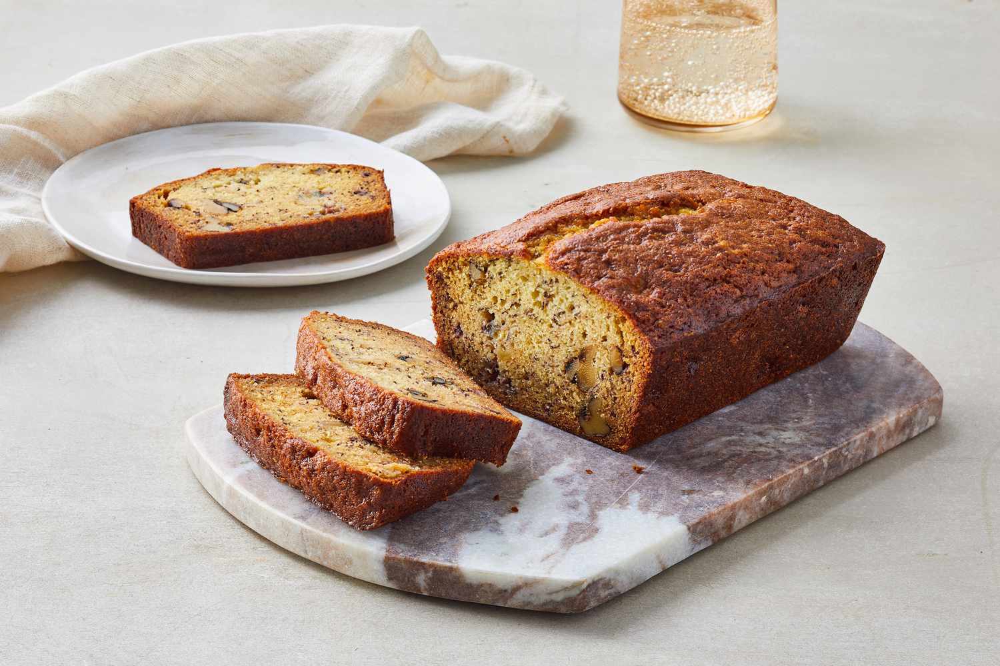

Home
Banana Bread
Ingredients
-
2 eggs, whisked
-
plain flour
-
ripe bananas
-
butter
-
baking soda
-
cinnamon
-
salt
-
brown sugar

Directions
1.
Preheat oven to 180 degrees celcius (gas mark 4).
2.
Lightly oil a loaf pan.
3.
In one bowl, stir together the flour, baking soda and salt.
4.
In second bowl, stir together the butter, cinnamon and brown sugar, until the mixture is smooth.
5.
Stir in the second bowl, also the eggs and bananas, until thoroughly mixed.
6.
Pour the banana mixture into the flour mixture and stir to an even mixture.
7.
Spoon the final mixture into the prepared loaf pan and smooth the surface.
8.
Bake in the preheated oven for 1 hour or until a skewer inserted into the loaf, comes out clean.
9.
Remove from the oven and set aside in the pan for 10 minutes.
10.
Turn onto a wire rack to cool completely.